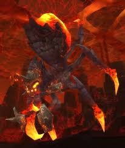

Modello 3DLord Rhyolith
Achievement del boss
Heroic: Lord Rhyolith
Uccidi Lord Rhyolith in modalita Heroic.
Not an Ambi-Turner
Colpisci solo la gamba destra con attacchi single target. Evita danno AoE e burst incontrollato: se il boss muore subito senza rispettare la condizione, l'achievement puo non essere assegnato.